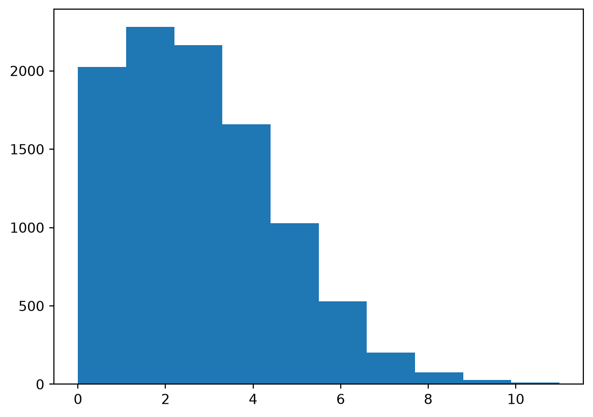
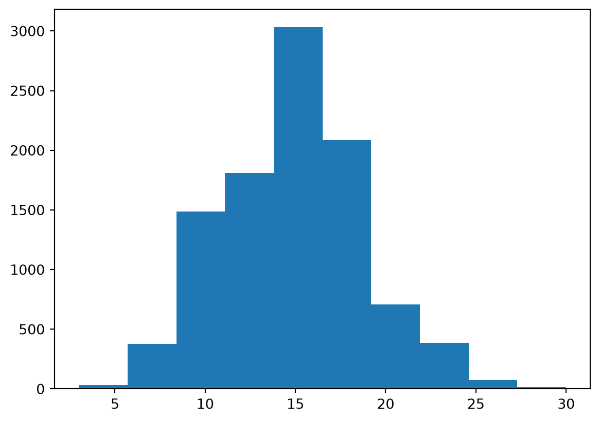
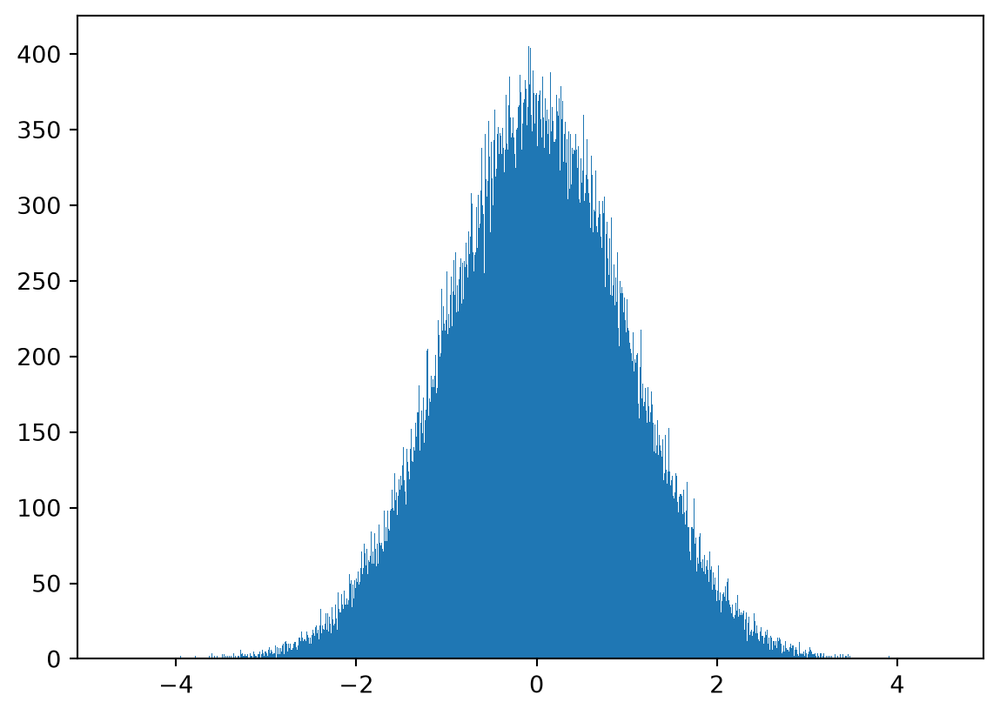
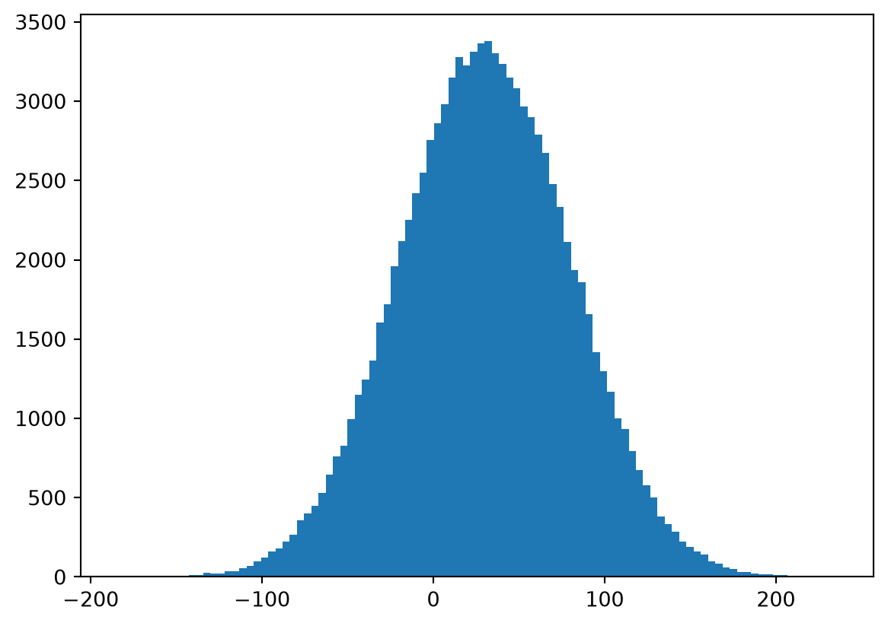

SciPy is a package that builds on NumPy to enable scientific computing
Provides specialised submodules for different functionality, including,
Optimisation
Fourier Transformations
Signal Processing
Linear Algebra
Image Processing
Statistics
and more…
SciPy and NumPy are often paired with MatplotLib for visualisation
Unlike NumPy there is no accepted shorthand for importing however import scipy as sp is used fairly often in practice
The scipy.misc Submodule
Contains functions that don’t below in a more broader submodule
Some of these are just special demo functions
For example, face and ascent
These now live in the scipy.datasets
Require the optional pooch package
Important
misc Deprecation
Scipy has deprecated misc and it is planned for removal in Scipy 2.0. All the functionality of misc has been removed. For example the face and ascent functions now live in scipy.datasets
from scipy import datasetsimport matplotlib.pyplot as pltface = datasets.face()print(face)plt.imshow(face)plt.show()
Downloading file 'face.dat' from 'https://raw.githubusercontent.com/scipy/dataset-face/main/face.dat' to '/home/runner/.cache/scipy-data'.
scipy.special contains a stats submodule. This is not designed for direct use. Instead the scipy.stats module should be preferred
The scipy.stats Submodule
Provides probability distributions and statistical functions
Discrete Distributions
Scipy offers several discrete distributions
Each provides a common interface
For example, demonstrating with a binomial distribution
from scipy import statsimport matplotlib.pyplot as pltB = stats.binom(20, 0.3) # 20 trials with a 30% success chanceprint("B.pmf(2):", B.pmf(2)) # Probability mass function P(x == 2)print("B.cdf(4):", B.cdf(4)) # Cumulative density function (P x < 4)print("B.mean():", B.mean()) # Meanprint("B.std():", B.std()) # Std-devprint("B.rvs():", B.rvs()) # Get a random sample from the distributionprint("B.rvs(15):", B.rvs(15)) # Get 15 random samples from the distribution# Plotting a large sampling of the distributionsamples = B.rvs(size=100_000)plt.hist(samples)plt.show()
Another discrete distribution is the Poisson Distribution
Models the probability of a certain number of events happening
Shape of the distribution is controlled by the mean
Set via the mu keyword
A low mean skews the distribution left
A high mean pushes the distribution right
A left-skewed distribution
from scipy import statsimport matplotlib.pyplot as pltP = stats.poisson(mu=3)samples = P.rvs(size=10_000)plt.hist(samples)plt.show()

A right-shifted distribution
from scipy import statsimport matplotlib.pyplot as pltP = stats.poisson(mu=15)samples = P.rvs(size=10_000)plt.hist(samples)plt.show()

There are number of further discrete distributions provided by scipy.stats including,
Beta-binomial,
Boltzmann (Truncated Planck),
Planck (Discrete Exponential),
Geometric,
Hyper-geometric,
Logarithmic,
Yule-Simon,
and more
Continuous Distributions
Scipy also supports continuous distributions
There are more continuous distributions supported than there are discrete
Like discrete distributions they all have a common interface
Take arguments for location (loc) and scale (scale)
By default, the location is \(0\) and the scale is \(1\)
For example, a common continuous distribution is the normal distribution
from scipy import statsimport matplotlib.pyplot as pltN = stats.norm() # a Normal Distribution located at `0` and with scale `1`samples = N.rvs(size=100_000)plt.hist(samples, bins=1000)plt.show()

As we change the loc and scale parameters the distribution will change too
from scipy import statsimport matplotlib.pyplot as pltN = stats.norm(loc=30, scale=50)samples = N.rvs(size=100_000)plt.hist(samples, bins=100)plt.show()

As mentioned continuous distributions have a common interface
from scipy import statsN = stats.norm(loc=30, scale=50)print("N.mean():", N.mean())print("N.pdf(4):", N.pdf(4)) # Probability Density Functionprint("N.cdf(2):", N.cdf(2)) # Cumulative density functionprint("N.rvs():", N.rvs()) # Random sample from the distributionprint("N.var():", N.var()) # Varianceprint("N.median():", N.median()) # Medianprint("N.std():", N.std()) # Standard Deviation